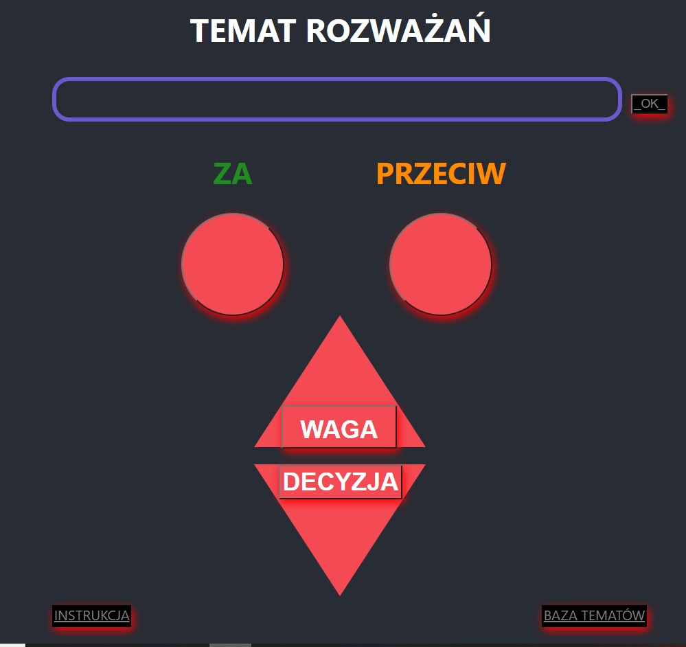
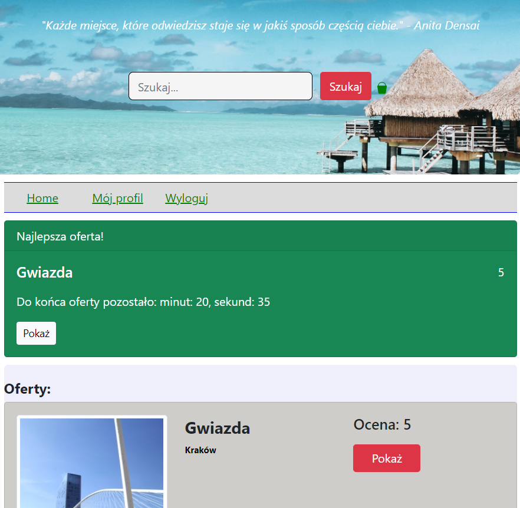
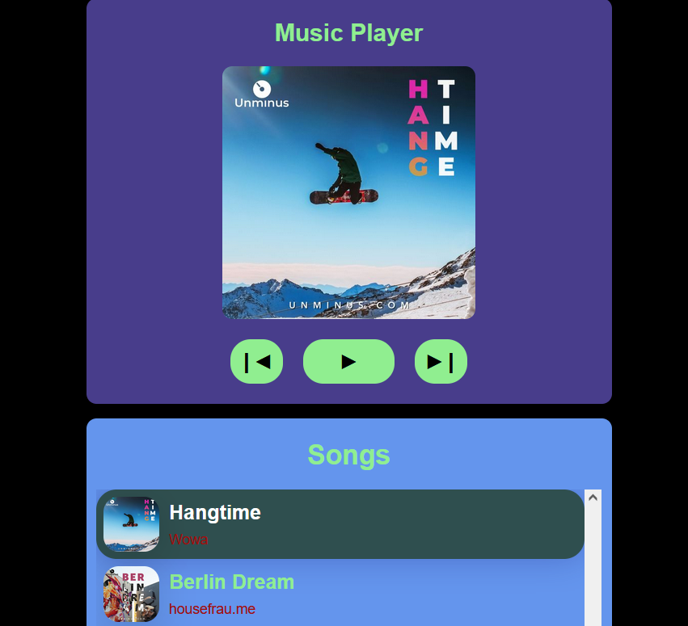
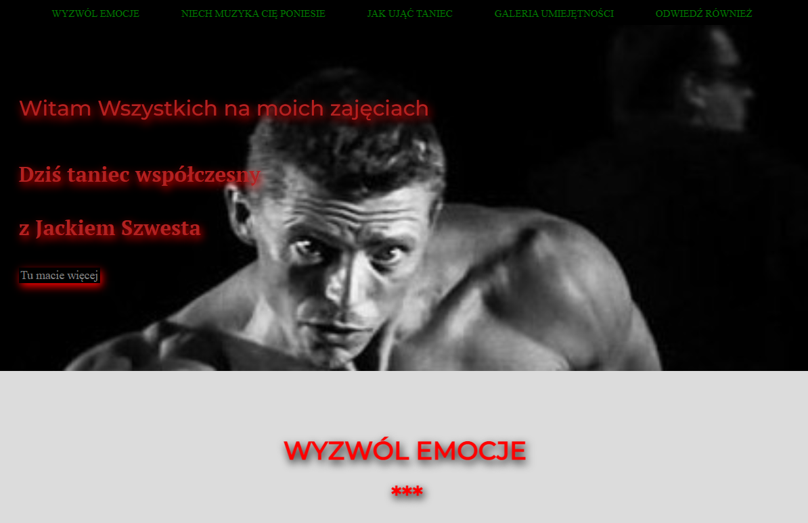

DANE KONTAKTOWE
 660 975 104
660 975 104 jacekszwesta@interia.pl
jacekszwesta@interia.pl - GitHub
UMIEJĘTNOŚCI
- HTML5
- CSS3
- JavaScript
- React.js
- Git
- MySQL
CECHY OSOBOWOŚCI
- Kreatywność
- Staranność
- Estetyka
- Terminowość
- Odpowiedzialność
- Umiejętność pracy w zespole
- Umiejętność analitycznego myślenia
- Komunikatywność
- Szybkie uczenie się
- Punktualność
JĘZYKI OBCE
- Angielski: poziom B1
- Polski: ojczysty
ZAINTERESOWANIA
- Taniec
- Wschodnie Sztuki Walki
(2 DAN w Taekwon-do) - Wędkarstwo
DOŚWIADCZENIE PROGRAMISTYCZNE
- 
"Podejmij Decyzje" to moja własna wymyślona aplikacja do podejmowania istotnych decyzji
i jestem w trakcje jej realizacji w React.js (GitHub). - "Noclegi" aplikacja służy do tworzenia własnej bazy hoteli. Zrobiona w React.js z kursu przy wykorzystaniu klas bootstrapowych.
- "Music Player" to aplikacja takiego mini odtwarzacza muzyki. Zrobiłem ją z kursu i dodałem kilka własnych funkcjonalności.
-  "MojaStrona" to strona o tańcu współczesnym, czyli jednej z moich pasji (HTML, SCSS, JavaScript).
- Nauka z kursów, webinarów, tutoriali, blogów, dokumentacji, uczestnictwo na forach itp.
CERTYFIKAT
- Grudzień 2021 Certyfikat ukończenia kursu "React - kurs kompletny", autor: Adam Hałasa "TWÓRCA STRON.PL".
WYKSZTAŁCENIE
- 1999 – 2004 AKADEMIA EKONOMICZNA im. Oskara Langego we Wrocławiu,
Wydział Zarządzania i Informatyki,
Kierunek: Zarządzanie i Marketing,
Specjalność: Zarządzanie Przedsiębiorstwem,
Obrona pracy magisterskiej: ocena bardzo dobra.
DOŚWIADCZENIE ZAWODOWE
- Styczeń 2017 - Marzec 2022 Niepubliczne przedszkole "TIKA" w Bytomiu,
Stanowisko: Pomoc nauczyciela. - Styczeń 2016 - obecnie Prowadzenie zajęć i warsztatów z tańca, akrobatyki, Wschodnich Sztuk Walk (praca popołudniami).
- Czerwiec 2015 - Marzec 2016 F.M.P. "GUMEX" w Dąbrowie Górniczej,
Stanowisko: Specjalista ds. jakości. - Październik - Listopad 2014 Przygotowanie swojego autorskiego spektaklu z młodzieżą z Ośrodka "Dom Nadziei" w Bytomiu,
Stanowisko: Choreograf,
Spektakl: "Baśń o leniwym księciu",
Premiera:27 listopad 2015 Opera Śląska w Bytomiu. - Październik 2007 - Sierpień 2013 Śląski Teatr Tańca w Bytomiu,
Stanowisko:Tancerz-aktor ,
Obowiązki: Występowanie w spektaklach w Polsce i za granicą (USA - New York City, Korea - Seul, Wietnam, Chiny, Macao, Norwegia, Niemcy). - Klauzula o przetwarzaniu moich danych osobowych znajduje się w CV-pdf do ściągnięcia u góry strony.